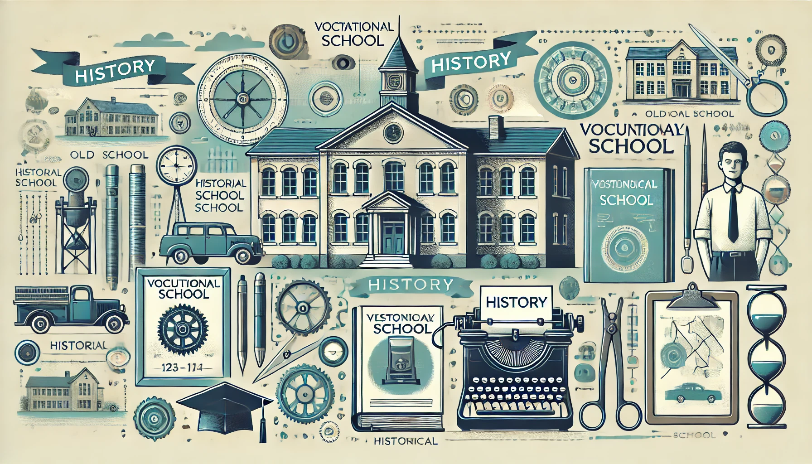
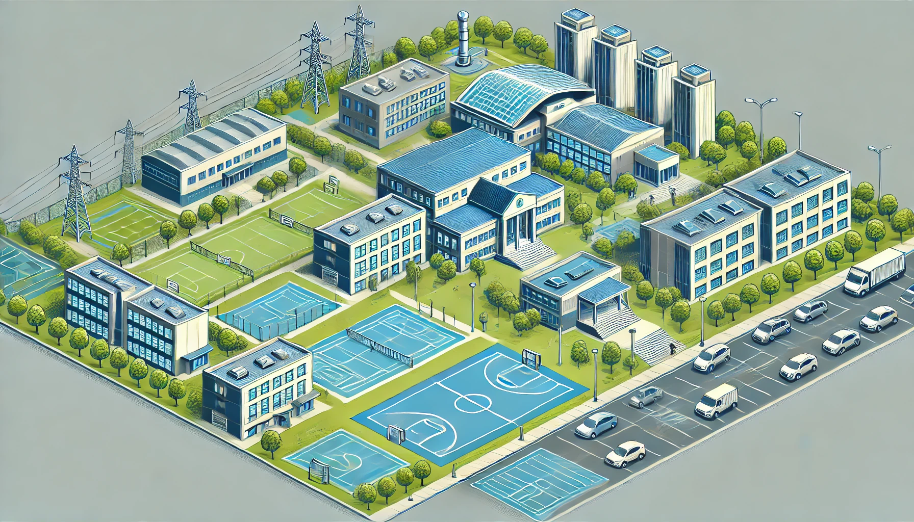

Geschichte der Schule
Die Berufsbilungsschule Winterthur (BBW), gegründet 1835, bietet eine lange Tradition in der Ausbildung junger Menschen. Die Abteilung Informatik wurde ins Leben gerufen, um den Anforderungen der digitalen Welt gerecht zu werden. Unsere praxisorientierten Ausbildungsprogramme werden regelmäßig aktualisiert und bereiten die Schüler optimal auf ihre berufliche Zukunft in der IT-Branche vor. Durch enge Zusammenarbeit mit regionalen Unternehmen sammeln die Schüler wertvolle praktische Erfahrungen. Engagierte Lehrkräfte mit umfangreichen Fachkenntnissen sorgen für eine qualitativ hochwertige Ausbildung. Die BBW ist stolz darauf, ein wichtiger Teil der Bildungsgeschichte von Winterthur zu sein und weiterhin IT-Fachkräfte von morgen auszubilden.
Lehrkräfte und Verwaltung

Unsere engagierten Lehrkräfte und Verwaltungsmitarbeiter an der Berufsbilungsschule Winterthur (BBW) sorgen für eine erstklassige Ausbildung im IT-Bereich. Das erfahrene Lehrkräfteteam fördert die Schüler individuell und praxisnah, während das Verwaltungsteam eine reibungslose Organisation sicherstellt. Durch enge Zusammenarbeit mit regionalen Unternehmen sammeln die Schüler wertvolle praktische Erfahrungen und sind optimal auf ihre berufliche Zukunft vorbereitet. Die BBW ist stolz darauf, die IT-Fachkräfte von morgen auszubilden und so zur Innovationskraft der Region beizutragen. Willkommen an der BBW – Ihrem Partner für eine erfolgreiche Zukunft in der IT-Branche!
Campus und Einrichtungen
Unsere modernen Einrichtungen bieten alles, was Schüler brauchen, um erfolgreich zu lernen und zu wachsen. Die BBW ist mit den neuesten Technologien und Ressourcen ausgestattet, die eine praxisnahe und zukunftsorientierte Ausbildung ermöglichen. Wir verfügen über hochmoderne Computerräume, Labore und eine umfassende Bibliothek, die den Schülern Zugang zu aktuellen Informationsquellen bietet. Unsere freundlichen und funktionalen Lernumgebungen sind darauf ausgelegt, Kreativität und Zusammenarbeit zu fördern. Zusätzlich stehen den Schülern gemütliche Aufenthaltsbereiche zur Verfügung, die eine angenehme Atmosphäre für Pausen und soziale Interaktionen schaffen. Die BBW setzt sich dafür ein, ein inspirierendes Umfeld zu bieten, das den Bildungsweg unserer Schüler optimal unterstützt.